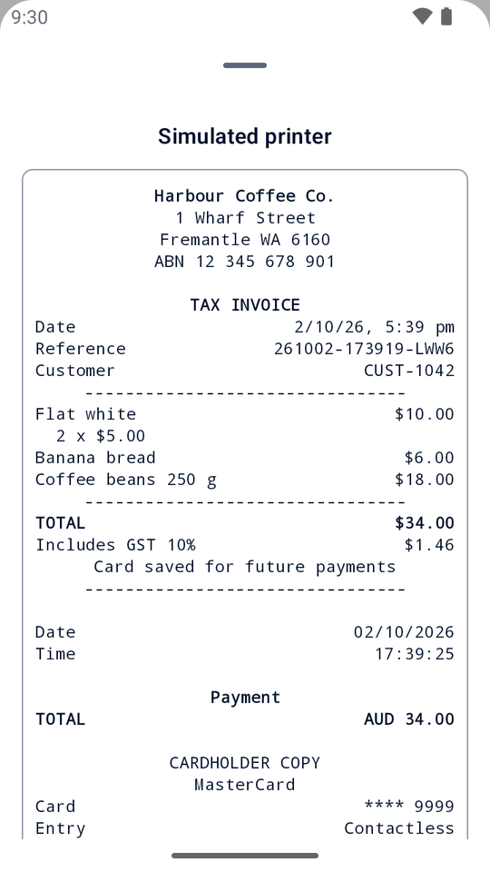
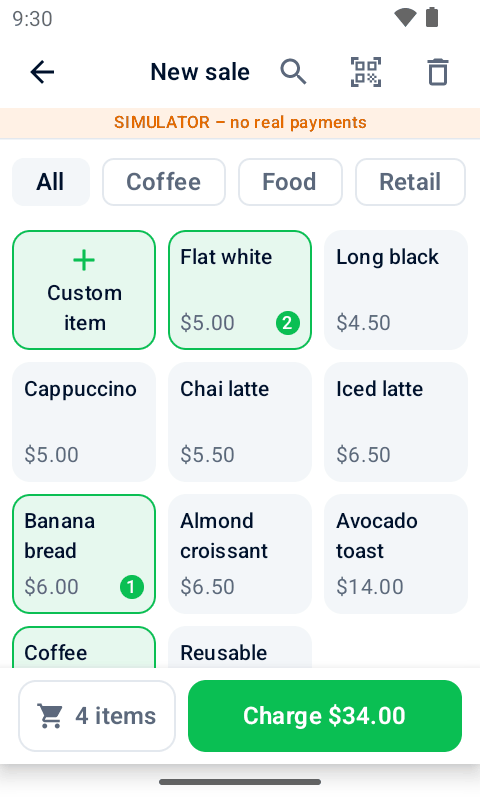
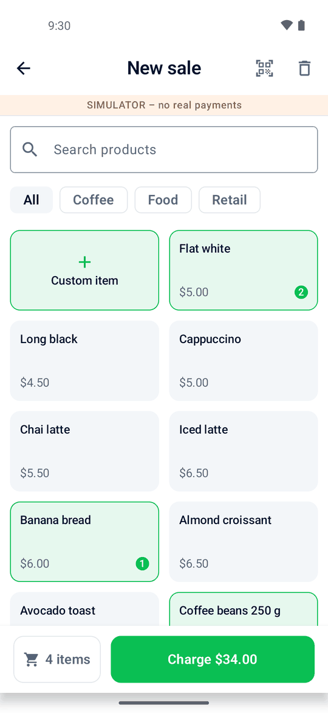
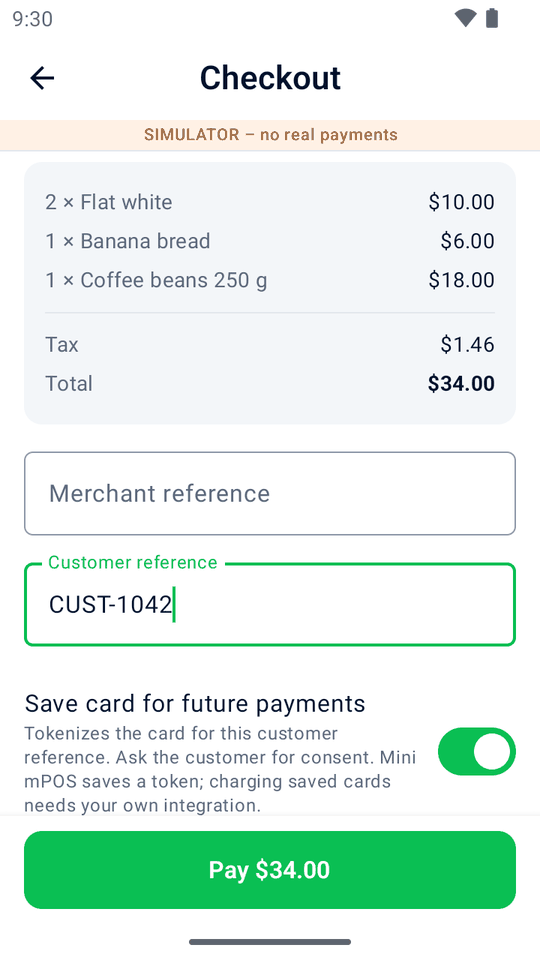
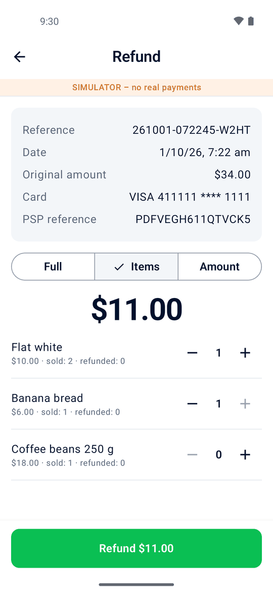
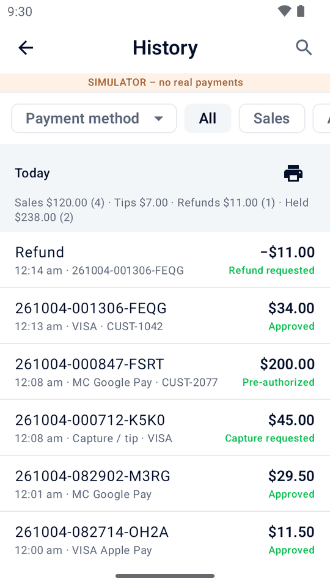
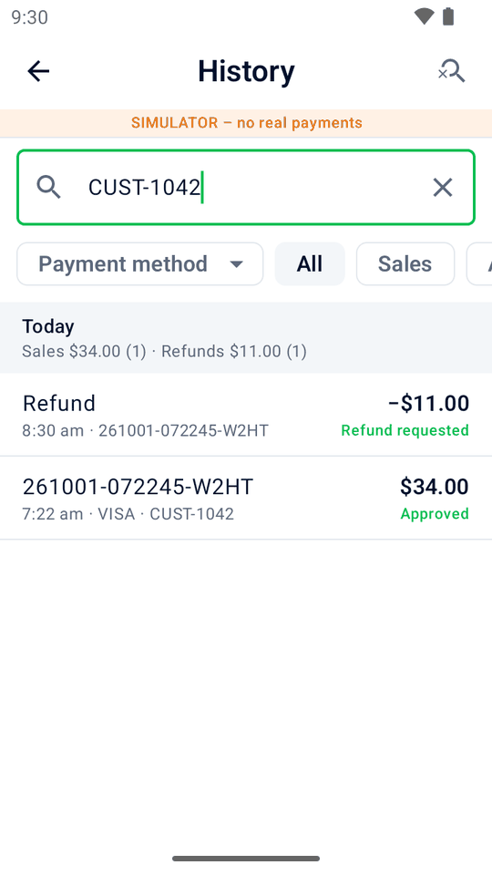
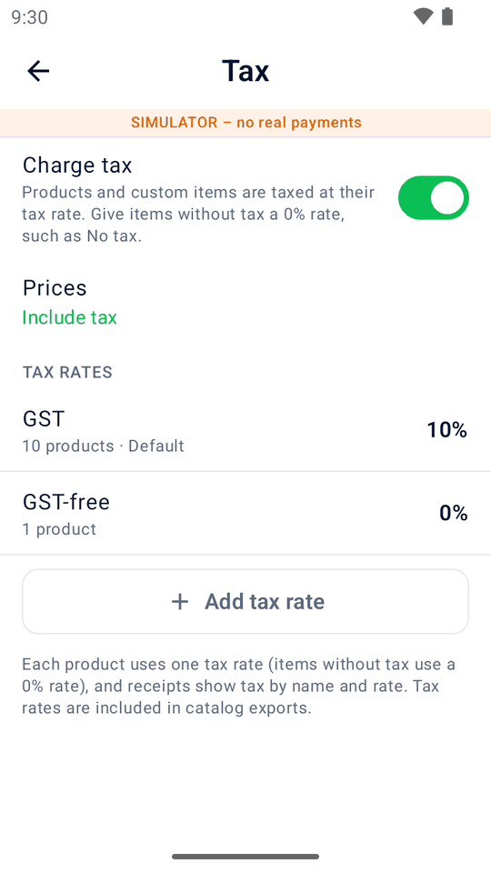
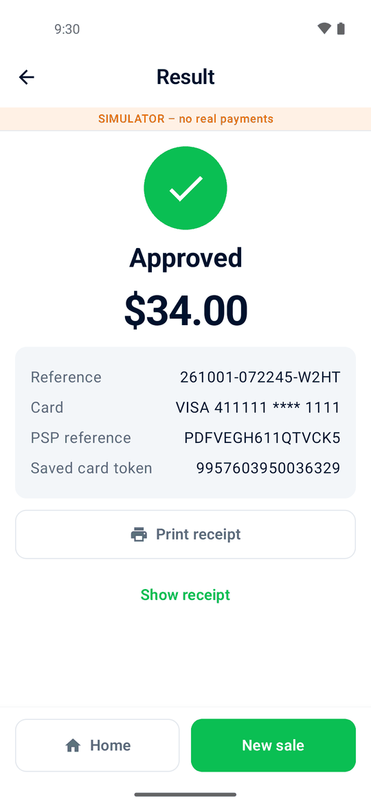

Products at your fingertips
Keep a product list with prices, categories, barcodes and tax. Search, filter, scan a barcode, or key in a custom amount.
Free and open source · for Adyen Android terminals
Mini mPOS turns an Adyen Android terminal into a complete little point of sale. Ring up products, take the card payment, print or email the receipt, and refund by scanning it. No extra tablet, no cash register and no app subscription.


AMS1 and S1F2 illustrations with English demo screens. Not product photographs.
Designed for cafés, market stalls, pop-ups and service businesses that want to keep things simple.
Keep a product list with prices, categories, barcodes and tax. Search, filter, scan a barcode, or key in a custom amount.
Take card and wallet payments with Adyen on the terminal itself, or from a tablet or phone with a terminal or Tap to Pay.
Print a complete receipt with your business details and a refund QR code, email it, or share it from a tablet or phone.
Send a payment link instead: the customer scans its QR code or opens it from an email, and pays on Adyen's payment page.
Scan the QR code on the receipt, then refund everything, a few items, or an amount. Always linked to the original payment.
Hold a deposit for a booking or rental. Collect the payment later, adjust the amount or release the hold.
Let customers leave a tip on the printed receipt, then add it to the bill when they are ready.
Set your own tax rates, include tax in prices or add it at checkout. Choose any currency Adyen supports.
Share your products and settings with another terminal using QR codes. Bring passwords and keys too, with a protected transfer code.
Protect products and settings with an admin PIN. Passwords and keys are stored encrypted.

Tap products or key in an amount.

Add a reference and, with consent, save the card.
One slip with everything, plus a QR code.

Scan the receipt and pick what to refund.


See daily totals and find sales, refunds and deposits in a few taps.
One device for products, payments and receipts. No extra tablet and no backend to run.


Explore the built-in simulator on an Android phone or emulator, without a payment terminal.
Download the app, deploy it through your Adyen Customer Area and connect your terminal. Our guide walks you through it.
Adyen Android payment terminals running Android 9 or later, such as the S1F2, S1F4Pro, S1E4Pro, S1E2L, AMS1, S1U2 and SFO1. Printing needs a model with a printer, and QR scanning needs a camera.
Yes. On an Android tablet or phone it takes payments on an Adyen terminal over your network or the internet, or with Tap to Pay through the Adyen Payments app. See Or use a tablet or phone in the guide.
Nothing. Mini mPOS is free and open source under the MIT license. You pay Adyen for payments as usual.
No. It is an independent project built for Adyen terminals. It isn't made, endorsed or supported by Adyen, so test it in your Adyen TEST environment before going live.
Yes. Hold a deposit on a card, then collect it later or release it. See Pre-authorizations in the guide for setup and payment method requirements.
Yes, on terminals with a printer. Customers write a tip on the receipt and you add it to the bill. See Tips on the receipt in the guide.
Yes, with Adyen's Checkout API set up. Checkout sends a payment link instead of the terminal; show its QR code, email it, print it or share it. See Payment links in the guide.
Products, settings and history are stored on the terminal (or tablet or phone). You can choose to share them with another terminal or email receipts through your own mail server. Payments are processed by Adyen.
No server. On a terminal, it needs the shared key from your Customer Area and a Checkout API key, for captures and payment links. See The Checkout API and captures in the guide.